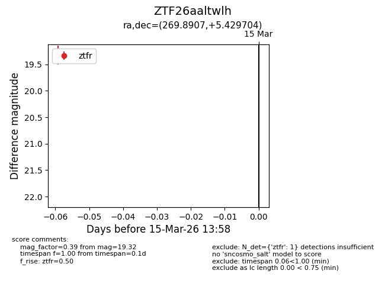
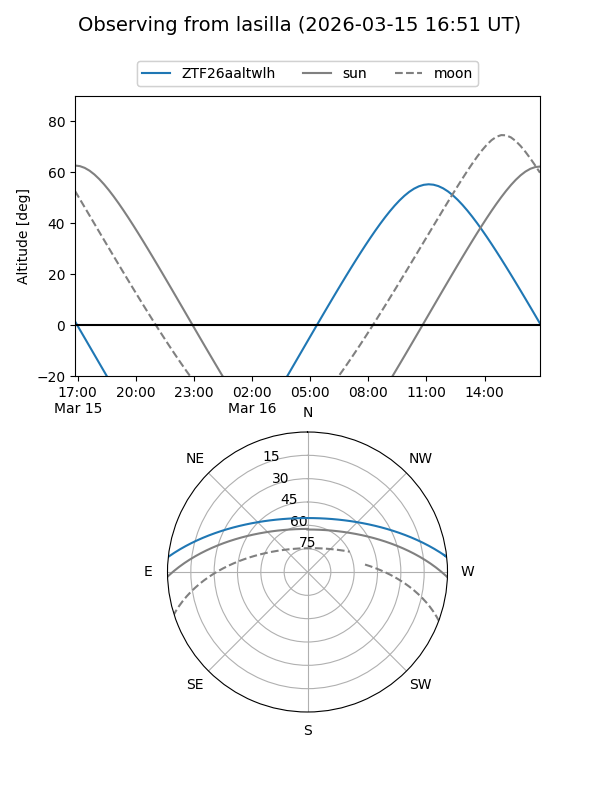
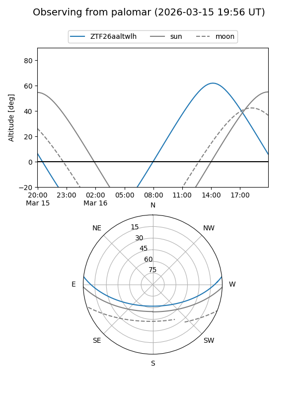

ZTF26aaltwlh
Target ZTF26aaltwlh at 2026-03-15 14:00
Aliases and brokers:
FINK: link
Lasair: link
ALeRCE: link
alt names
ZTF26aaltwlh (ztf,fink_ztf)
Coordinates:
equatorial (ra, dec) = 269.8907,+5.42970
equatorial (HMS+DMS) = 17:59:33.78,+05:25:46.93
galactic (l, b) = (31.8892,+14.00352)
Flags:
Photometry:
last ztfr=19.32
1 ztfr detections
Lightcurve

Visibility


Additional plots